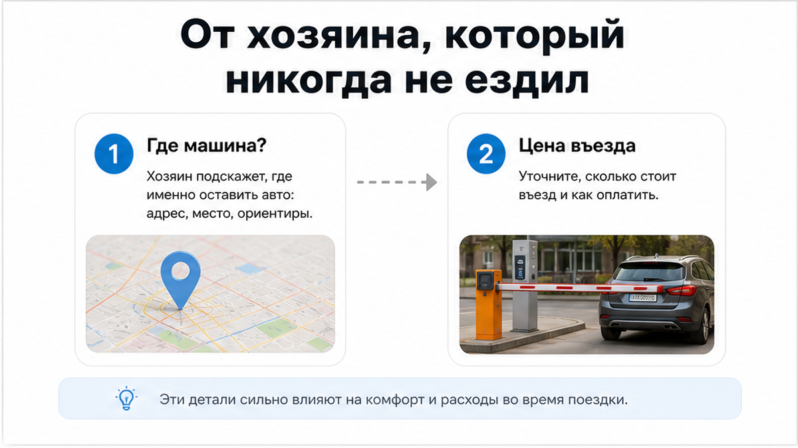
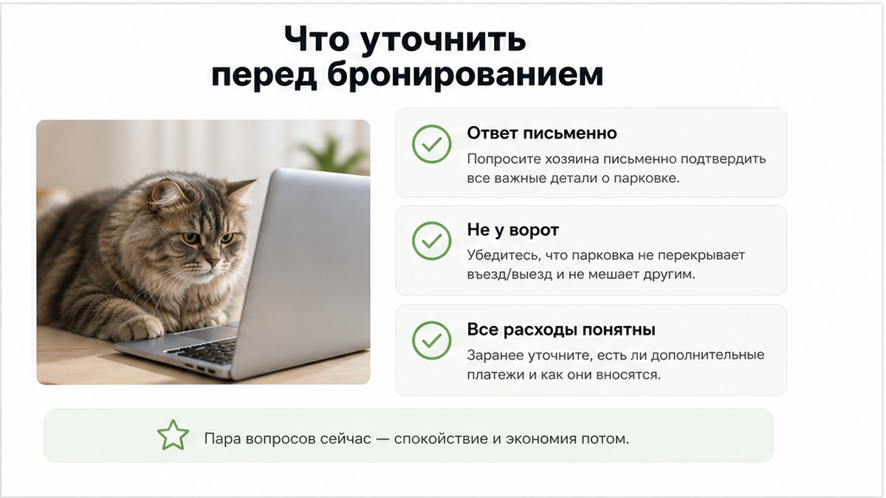
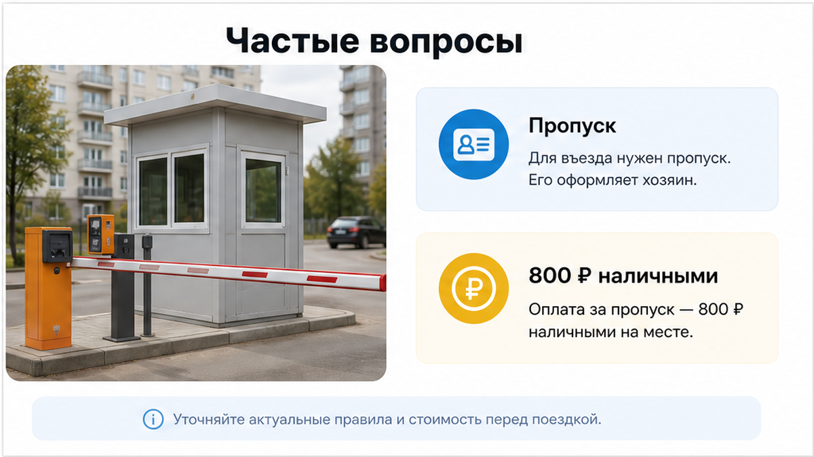
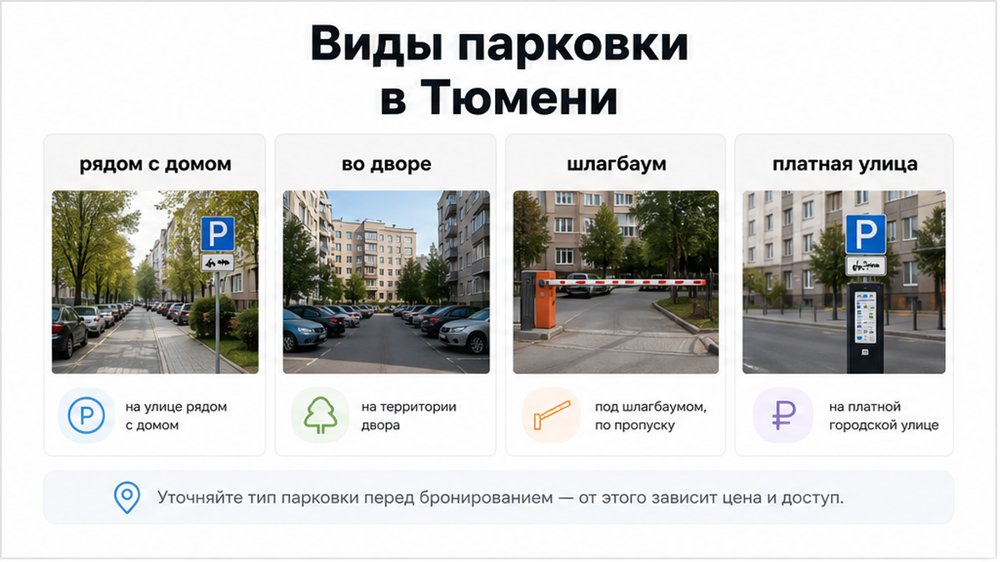
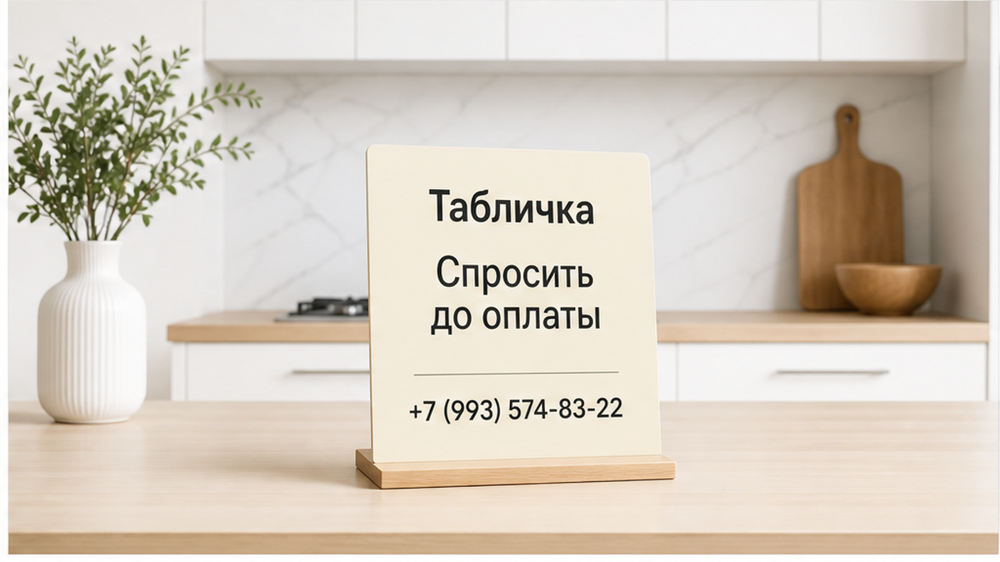
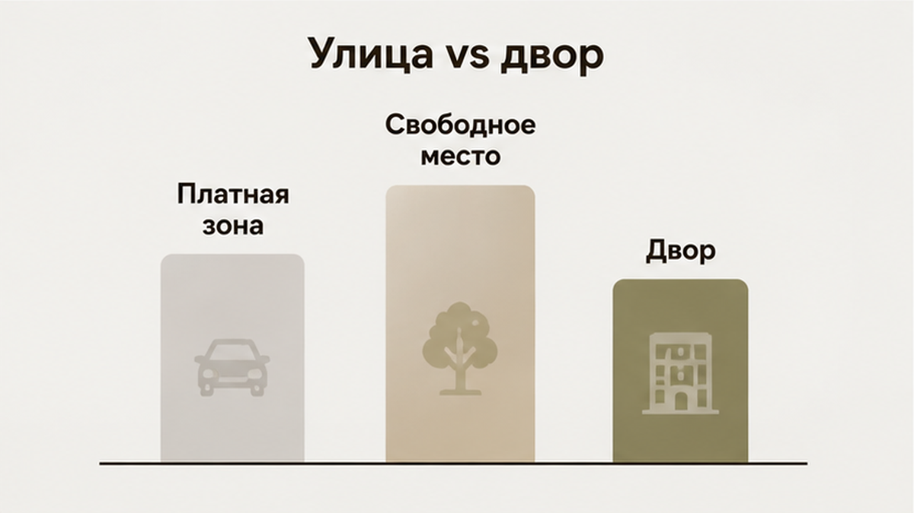
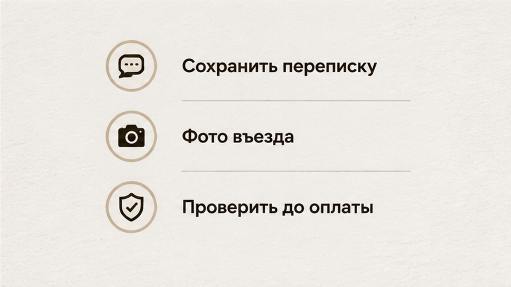

«Парковка бесплатно» стояло в объявлении третьей строкой снизу — между Wi-Fi и утюгом. Гость ехал в Тюмень на машине, с ребёнком и двумя чемоданами. Он свернул во двор нужного дома, подъехал к опущенному шлагбауму — и увидел человека из будки. Тот посмотрел на номера и спокойно сказал: «Проезд 800. Наличными или переводом, как удобнее». Гость набрал хозяина квартиры. Хозяин тоже искренне удивился: «Какой шлагбаум? Там парковка рядом, бесплатная. Я сам без машины, никогда не заезжал». Сзади уже сигналили. Машина стояла поперёк въезда, ребёнок ныл, чемоданы нагревались в багажнике, а слово «бесплатно» превращалось в 800 рублей и двадцать минут спора о том, кто кому что обещал.
Восемьсот рублей сами по себе не катастрофа. Катастрофа в другом: гость выбрал эту квартиру именно из-за парковки. Отказался от варианта дешевле, где про машину ничего не было сказано. Перевёл деньги за трое суток. А на въезде выяснил, что галочка в объявлении не означает ни закреплённого места, ни открытого двора, ни бесплатного проезда. Она означает только одно: когда-то хозяин отметил фильтр «есть парковка» — и больше к этому вопросу не возвращался. Нет. Так не заселяем. Не потому что 800 ₽ — кража. А потому что парковка должна быть названа до оплаты, а не у будки.
Я хост посуточной в Тюмени. Это «Добрый дом». Принимаем гостей с машинами круглый год: командировочных, семьи из Тобольска и Сургута, людей на вахте, гостей на свадьбы. И самый частый спор у нас не про залог и не про уборку. Он про двор, ворота и фразу «а где мне оставить машину?». Пишем в Telegram и MAX, отвечаю сам.

В объявлении можно написать: «квартира посуточно в Тюмени, есть парковка». Но за этой строчкой могут скрываться четыре совершенно разные ситуации.
Первая — парковка рядом. То есть улица, обочина, карман у дороги или свободный пятачок за соседним домом. Формально машина действительно может стоять рядом. Только место никто не обещал. Если вы приехали поздно вечером, придётся искать его самостоятельно: круг за кругом, с включённой аварийкой, пока ребёнок спрашивает, почему мы ещё не заходим в квартиру.
Вторая — парковка во дворе. Но двор жильцов бывает открытым, а бывает закрытым. Там может стоять шлагбаум, работать пропуск по номеру автомобиля, действовать база консьержа или приложение управляющей компании. Хозяин квартиры иногда имеет право въезда сам. Иногда не имеет: он купил квартиру под сдачу, живёт без машины и ни разу не проверял, как попадает во двор гость.
Третья — парковка на территории жилого комплекса. Огороженная зона, отдельный шлагбаум, автоматическая касса или человек в будке. Она может относиться к комплексу, а может обслуживаться отдельной организацией. Проживание в квартире не открывает въезд автоматически.
Четвёртая — городская платная парковка в ста метрах от дома. Она тоже окажется в голове хозяина в категории «машину поставить можно», но к квартире не относится вообще никак. У неё свои тарифы, часы работы и правила оплаты.
Поэтому важна не сама надпись «парковка». Важны конкретное место, конкретный способ въезда и конкретный ответ на вопрос, платно это или нет. Всё остальное вы оплачиваете дважды: сначала бронью, потом нервами у шлагбаума.

В той истории хозяин не был жуликом. Он не придумывал бесплатный въезд, чтобы собрать больше броней. Он просто никогда не заезжал туда на машине. Видел из окна, что во дворе стоят автомобили. Значит, парковка есть. Поставил галочку и пошёл дальше.
Потом жильцы поставили шлагбаум: надоели чужие машины. Затем ввели пропуска по номерам. Потом появился человек в будке и тариф для гостей. Хозяин ничего не заметил. Объявление не обновлял год. Для него парковка по-прежнему «есть», потому что во дворе по-прежнему стоят машины.
А потом приезжаете вы. Не хозяин, который знает код и знаком с охранником, а гость с багажом, ребёнком и адресом в телефоне. В этот момент выясняется, что «есть парковка» не отвечает ни на один практический вопрос: где остановиться, кто откроет ворота, нужно ли заранее сообщить номер и кто платит за въезд.
Поэтому вопрос «вы точно меня не обманете?» почти бесполезен. Хозяин ответит: «Конечно нет» — и, возможно, будет совершенно честен. Просто честность без проверки не открывает шлагбаум.

Не спрашивайте только: «Парковка есть?» На этот вопрос легко получить автоматическое «да».
Спросите так:
«Где именно будет стоять моя машина и как я туда заеду?»
В этой формулировке есть всё необходимое: место и способ въезда. На неё уже нельзя ответить одной галочкой. Хозяину придётся назвать двор, территорию или улицу, объяснить, есть ли шлагбаум, и сказать, кто его открывает.
Хороший ответ может звучать по-разному. Например: «Машина ставится во дворе дома, шлагбаум закрытый, пришлите номер за сутки — внесу в список, въезд для гостей входит в проживание». Или: «Двор закрытый, гостевой въезд платный, 800 рублей, оплачивается на месте». Второй вариант тоже рабочий. Вы просто заранее знаете цену и решаете, подходит ли она вам.
Плохой ответ выглядит иначе: «Там всё нормально», «места всегда есть», «приедете — разберётесь», «я сам не езжу, но соседи как-то ставят». Это не информация. Это перенос чужой проблемы на вас — только на два дня позже, когда вы уже оплатили квартиру и стоите перед воротами.
Просите ответ письменно. Не голосовым сообщением и не обещанием по телефону. Переписку можно перечитать на въезде, а при необходимости показать человеку в будке. Голос через сутки превращается в «я такого не говорил».
С залогом происходит то же самое — мы уже рассказывали, чем заканчивается залог на словах.
А вы бы стали платить 800 рублей на месте, если в объявлении было написано «бесплатно»? Напишите в Telegram или MAX, если попадали в такую ситуацию в Тюмени. Интересно, что вам ответили у шлагбаума — и чем закончился разговор.

Мы не пишем в объявлениях просто «парковка бесплатно». Это слово без деталей ничего не гарантирует. По каждому адресу описываем, как устроен въезд: двор открытый или закрытый, есть ли шлагбаум, нужно ли заранее прислать номер машины, входит ли въезд в проживание или оплачивается отдельно.
Если гость едет на автомобиле, спрашиваем об этом до брони. Не за час до заселения, когда человек уже подъезжает к дому, а заранее. Если гостевой въезд платный, говорим прямо. Если свободных мест во дворе обычно не хватает, тоже говорим. Пусть человек выберет другой вариант, чем приедет к нам и обнаружит неожиданную оплату рядом с ребёнком в детском кресле.
Мы не отправляем гостя «разбираться на месте». Разбираться на месте — это когда хост экономит десять минут переписки за счёт вашего вечера. У шлагбаума не разбираются: там платят, звонят хозяину и пытаются понять, почему объявление обещало одно, а человек в будке говорит другое.
Та же логика работает с кодом от чужой двери при бесконтактном заселении: всё, что понадобится гостю, он должен знать до выезда.
И с количеством жильцов ситуация такая же, как с парковкой: сначала расплывчатая галочка, потом доплата за третьего у двери. Только в одном случае деньги требуют за третьего человека, а в другом — за въезд автомобиля.

Не давите на газ и не спорьте с охраной — у него свои правила, и вы их не измените за пять минут. Сфотографируйте табличку с тарифом, номер будки и положение шлагбаума. Напишите хозяину в чат: «Я у ворот, проезд 800 ₽, в объявлении было бесплатно — что делаем?». Если ответа нет — звоните. Если предлагают «заплатите сейчас, потом разберёмся» — это уже не парковка, а аванс без договора.
Иногда хозяин правда не знал про платный въезд. Тогда он может связаться с УК или соседом и открыть ворота. Иногда знает, но надеется, что вы заплатите и не будете скандалить с ребёнком в машине. Разница важна для вашего решения: оставаться в этой квартире или искать другую, пока не списали лишние сутки.

У нас в карточке не галочка «есть парковка», а строка: где именно ставить машину, как попасть во двор, входит ли проезд в цену. Если место на улице — пишем «улица, без гарантии». Если двор закрыт — даём контакт консьержа или код, который проверили на этой неделе. Гость с машиной получает это в переписке до оплаты, не у будки.

Сначала проверьте, где и как встанет машина. Потом переводите деньги и подтверждайте бронь. Не наоборот.
Восемьсот рублей из этой истории — не тариф Тюмени и не обязательная цена парковки у каждого дома. В другом дворе сумма будет другой, а где-то въезд окажется бесплатным. Важна не цифра. Важно, что вы узнаёте её заранее, а не у опущенного шлагбаума, когда сзади уже сигналят.
Слово «парковка» — это не место для автомобиля. Место появляется только тогда, когда хозяин написал вам, где оно находится и как туда попасть. Если ответ есть в переписке, у вас есть понятный план. Если вместо ответа «приедете — разберётесь», значит, разбираться будут не с хозяином, а вы.
Одна минута таких вопросов может сохранить 800 рублей, время и нормальный первый вечер в городе. Но главное — вы заранее понимаете, за что платите и что именно вам обещают.
Едете в Тюмень на машине? Напишите нам до брони: какой район нужен, на сколько ночей приезжаете и какой у вас автомобиль. Ответим по конкретному адресу — открытый двор или закрытый, есть ли шлагбаум, нужен ли номер заранее, входит ли въезд в стоимость. Если с парковкой у выбранного варианта будут сложности, скажем прямо и не возьмём бронь.
«Добрый дом» — квартиры посуточно в Тюмени, комфорт+, от хозяев.
Telegram-канал: t.me/Dobriy_dom_72
Менеджер в Telegram: t.me/Dobriy_dom_Tyumen
MAX: max.ru/id660300569233_biz
Бронирование: добрыйдом-72.рф/booking/
Телефон: +7 (993) 574-83-22